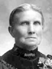
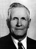
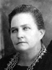

|  |
George Lovell
and Martha Turner |
----> |
 |
John Collier Lovell
Born 29 JAN 1872 Oak City,Millard,UT
Died 8 FEB 1964 Oak City,Millard,UT
Lucy Levern Broadhead
Born 14 DEC 1875 Levan,Juab,UT
Died 3 MAR 1929 Oak City,Millard,UT
Married 1 SEP 1897 Manti,Sanpete,UT
|
 |
|
Children:
|
Eva Lovell
Born 26 DEC 1898 Oak City,Millard,UT
Died 5 FEB 1984 Fillmore,Millard,UT
Married
John Milton Beckstrand 16 May 1923 Manti,Sanpete,UT
The 1st child of John Collier Lovell and Lucy Levern Broadhead
|
|
Thelma Levern Lovell
Born 3 Sep 1900 Oak City,Millard,UT
Died 18 Feb 1950 Oak City,Millard,UT
Married
Don Lyman Anderson 7 Apr 1925 Salt Lake City, Salt Lake,UT
The 2nd child of John Collier Lovell and Lucy Levern Broadhead
|
|
George Collier Lovell
Born 22 FEB 1902 Oak City,Mllrd,UT
Died 24 JAN 1950 Lindon,Utah,Utah
Married
Ruth Walker 29 June 1927
The 3rd child of John Collier Lovell and Lucy Levern Broadhead
|
|
William Owen Lovell
Born 28 May 1904 Hinckley,Millard,UT
Died 27 Apr 1982 Provo Utah,UT
Married
Norma Anderson 15 Nov 1923 Manti, Sanpete, UT
The 4th child of John Collier Lovell and Lucy Levern Broadhead
|
|
Eunice Lovell
Born 19 JAN 1906 Hinckley,Millard,UT
Died 18 SEP 1993 Sandy,Salt Lake,UT
Married
Reed Dwaine Nielsen
The 5th child of John Collier Lovell and Lucy Levern Broadhead
|
|
Marvin Leon Lovell
Born 14 SEP 1908 Oak City,Millard,UT
Died 13 MAR 1982 Delta,Millard,UT
Married
Florence "E" Nielson 23 Sep 1931 Manti,Sanpete,UT
The 6th child of John Collier Lovell and Lucy Levern Broadhead
|
|
Sadie Lovell
Born 29 AUG 1910 Oak City,Millard,UT
Died 26 APR 2002 Ashton,Idaho,USA
Married
Anthony Elvin Christensen 14 DEC 1933 Manti,Sanpete,UT
The 7th child of John Collier Lovell and Lucy Levern Broadhead
|
 |
Erma Lovell
Born 2 AUG 1913 Oak City,Millard,UT
Died 16 APR 1989
Married
Vernon Burt Roper 30 Nov 1934 Manti,Sanpete,UT
The 8th child of John Collier Lovell and Lucy Levern Broadhead
|
|
Hazel Lovell
Born 21 JUL 1917 Oak City,Millard,UT
Died 15 FEB 1980 Salt Lake City,Utah
Married
Ferrell Keith Walker 24 Nov 1939 Manti,Sanpete,UT
The 9th child of John Collier Lovell and Lucy Levern Broadhead
|
|